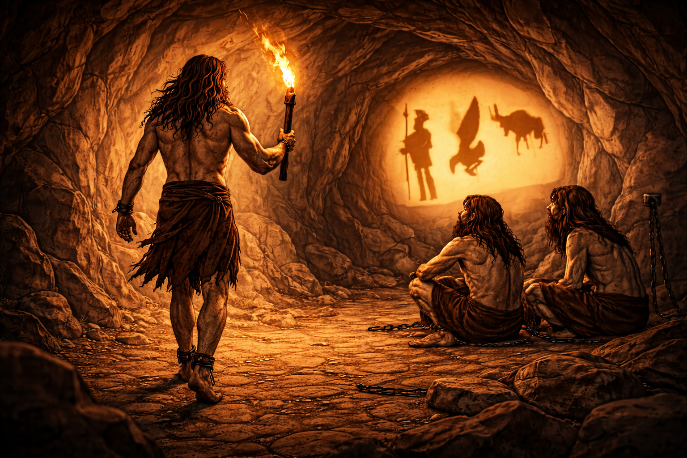

Con este gran descubrimiento, decides regresar a la cueva para contarle a los demás de esta nueva realidad llena de posibilidades y como juntos podrían salir y apoyarse mutuamente para sobrevivir. Cuando vas de regreso, los ves a lo lejos y te das cuenta que siguen en el mismo lugar, en las mismas condiciones en las que los dejaste.

Imagen generada a partir de la principal con ChatGPT 5.2 Instant